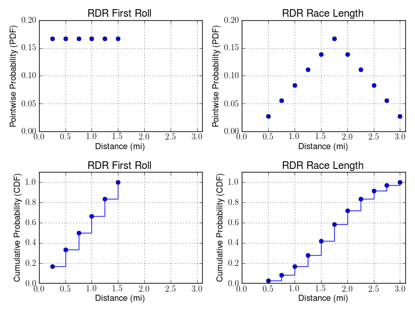

|
Race Details
Date: Friday, April 12, 2024
Time: Race starts promptly at 4:30pm
Race-Day Registration: 4:00-4:20pm
Location: CMU Track
Awards
Every runner will receive a Random Distance Run T-SHIRT (planned to be handed out at the race day this year.)
Additional prizes will be awarded to the top male and female finishers, the top student-advisor pair, the random finisher (the person who finishes in the position specified by the two dice rolls), and each person who correctly predicts the two dice rolls.
Registration
To register for the race, fill out this form
.
The registration fee of $15 will be used to cover the cost of the race t-shirts, water, & prizes.
Members from the CMU School of Computer Science and their friends are invited to participate.
We are going to cap registrations at 90, so you might not be able to register on the race day. To guarantee a spot,
register now!
How long will the race be?
Nobody knows! All we can say is that it will be somewhere between 1/2 mile and 3 miles (between 2 and 12 laps of the track). The exact number of laps will be specified by the sum of two ENORMOUS FUZZY DICE rolls - one occurring just before the start of the race, and one just before the first runner finishes the number of laps specified by the first dice roll.
Is there any history to the race?
Why yes! The Random Structures and Algorithms conference has held a Random Distance Run at its gatherings since 1983, with Paul Erdös rolling the dice at the first race. It was started at CMU by Adam Wierman and Rob Reeder in 2003. It was organized by Gaurav Veda from 2007-2010. Over the years, the RDR has been written about in the Pittsburgh Post Gazette and the Tartan and even filmed for a special on cmuTV.
Has anyone done a statistical analysis?
Jonathan Clark, on his own initiative, produced graphs to help you in your own interpretation of the randomness. You have the data, and even a visualization, come up with your own conclusions! Oh, and please join us as we take our yearly sample from this delightful distribution in the hope that our sample mean (currently 1.70mi, for those of you keeping score at home) will reach the golden expected value of 1.75mi!

That's a cool idea, but I'm not a runner...
Then come help us out! If you are interested in helping on this years race, we will definitely need volunteers. If you are interested, please sign up in this Google Form. Volunteers will get a free T-shirt as well!
RDR Winners |